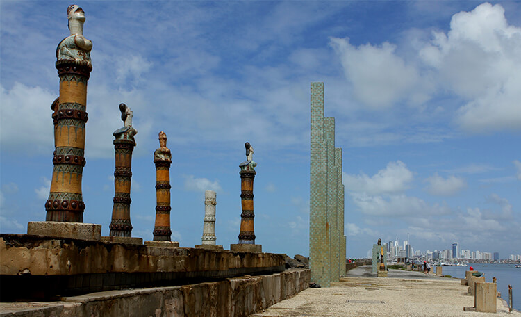

PARQUE DAS ESCULTURAS!
O Parque de Esculturas é composto por obras do artista plástico Francisco Brennand, e foi inaugurado como comemoração dos 500 anos de descobrimento do Brasil. Foi instalado sobre o molhe do porto. Tartarugas, pelicanos, ovos, maçarico, pássaros roca e sentinela guardam a principal obra do parque, a torre de cristal, inspirada em uma flor descoberta pelo paisagista Roberto Burle Marx. A travessia do Marco Zero até o parque funciona diariamente, das 7h às 17h.
FOTOS:
